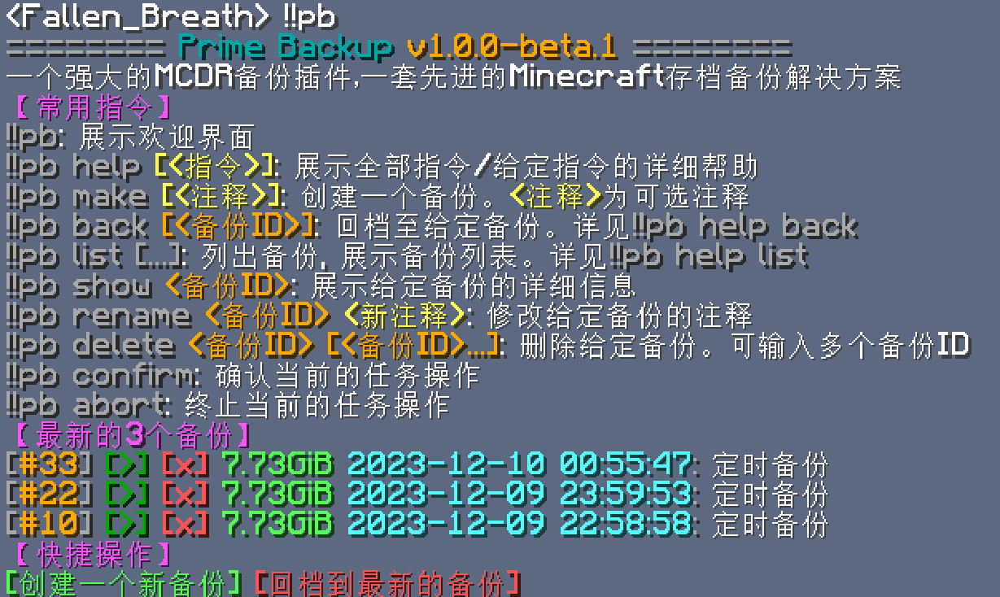

快速上手
安装¶
准备 MCDR¶
Prime Backup 是一个 MCDReforged 插件，
它需要 mcdreforged>=2.12 才能运行
要安装/更新 MCDReforged，你可以运行：
pip3 install mcdreforged>=2.12 -U
详见 MCDR 的相关文档
安装 Python 依赖¶
Prime Backup 需要一些 python 库才能运行，它们都被列在了 GitHub 仓库 根目录的 requirements.txt 文件中
APScheduler>=3.8,<4
SQLAlchemy>=2
mcdreforged>=2.12.0
pathspec
psutil
pydantic>=2
pytz
typing_extensions
xxhash>=3
zstandard
使用命令 pip3 install -r requirements.txt 即可安装所有需要的 Python 依赖
除此之外，你也可以使用以下指令一键安装所有需要的 Python 依赖
pip3 install -r https://tisunion.github.io/PrimeBackup/requirements.txt
可选依赖¶
一些 Prime Backup 功能所需要的 Python 库并没有在 requirements.txt 中列出， 因为在某些环境下安装这些依赖库可能会 花不少功夫
如果你想解锁 Prime Backup 的全部功能特性，你可以使用以下命令：
pip3 install -r https://tisunion.github.io/PrimeBackup/requirements.optional.txt
这些可选的依赖也被列在了 requirements.optional.txt 里
# hash
blake3
# compress
lz4
安装插件¶
从 GitHub Release 下载 Prime Backup 插件， 并将其放入 MCDR 的插件文件夹中，然后执行 MCDR 插件重载 操作
配置¶
在使用 Prime Backup 之前，你需要正确配置其配置文件，才可让其工作
别着急，对于大多数配置选项，你可以使用默认值。 但还有一些选项，是需要你配置一下的
位置¶
在 Prime Backup 插件首次被 MCDR 加载时，其配置文件将自动生成，
路径为：config/prime_backup/config.json
mcdr_root/
└── config/
└── prime_backup/
└── config.json <-------------
它是一个 json 文件，所以你得遵循 json 语法来编辑
必要的配置项¶
配置文件中的一些重要内容如下所示：
-
备份目标，即你需要备份的那些文件夹和文件。 你需要把
targets数组里的"world"给修改成你的存档文件夹的名字// 根配置 { // ... "backup": { "targets": [ "world" ], } // ... }除此之外，如果你在用像 bukkit 那样把每个维度存在独立的文件夹里的服务器，你可能需要这么配置：
"targets": [ "world", "world_nether", "world_the_end" ] -
用于计算/储存备份数据的方式
// 根配置 { // ... "backup": { "hash_method": "xxh128", "compress_method": "zstd", } // ... }-
hash_method: 对文件进行哈希的算法。可用选项： "xxh128", "sha256", "blake3" -
compress_method: 备份文件的压缩方式。常用建议："plain": 无压缩。如果你希望获得最快的操作速度，就用这个"zstd": 快速且高效的压缩算法。如果你想节约一些磁盘空间的话，推荐使用
Note
如果你想使用
blake3作为哈希算法，你需要手动安装blake3Python 库。 它并不包含在默认的 Python 依赖列表中，因为它在某些情况下，可能需要 rust 环境来构建安装pip3 install blake3Note
建议你在一开始就明智地设置这两个选项
虽然你依然可以在 MCDR 中使用
!!pb database migrate_xxx指令来迁移现有备份的压缩方法和哈希算法， 但完成迁移可能需要花费一定的时间和磁盘空间 -
-
启用插件。在配置文件的根对象中，设置
enabled为true。它应该位于整个配置文件的最上面// root config { "enabled": true // ... } -
使用 MCDR 命令重载插件
!!MCDR plugin reload prime_backup
现在 Prime Backup 应该开始工作了
使用¶
在 MCDR 控制台或游戏中输入 !!pb，你应该看到如下所示的欢迎页面
